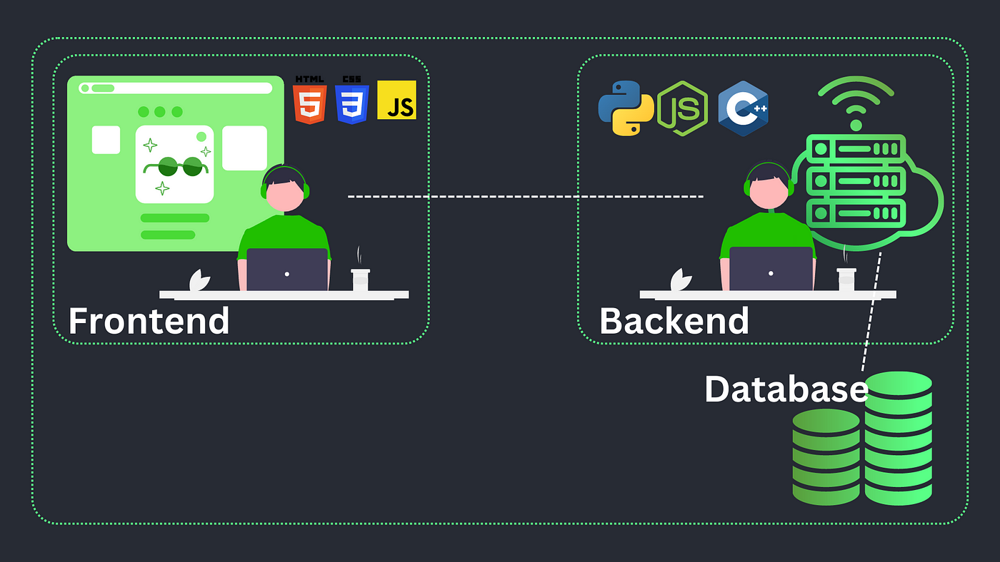

wujud asli atmin
Web Developer adalah seseorang yang bertanggung jawab untuk membangun, mengembangkan, dan memelihara situs web. Mereka berperan sebagai "arsitek digital" yang memastikan situs berjalan lancar, tampak menarik, dan memenuhi kebutuhan pengguna.
Web developer bekerja menggunakan berbagai bahasa pemrograman seperti HTML, CSS, dan JavaScript untuk bagian depan (frontend), serta PHP, Python, atau Ruby untuk bagian belakang (backend). Selain itu, mereka sering menggunakan alat dan framework seperti React.js, Angular.js, atau Laravel untuk mempermudah proses pengembangan.
Developer harus memastikan tata letak halaman, navigasi, dan konten mudah digunakan serta menarik bagi pengguna.
Mereka mengubah desain menjadi kode yang dapat dijalankan oleh browser, menciptakan situs yang fungsional dan responsif.
Developer menambahkan fitur seperti formulir kontak, animasi, dan elemen interaktif lainnya untuk meningkatkan pengalaman pengguna.
Mereka memastikan situs web cepat, kompatibel dengan berbagai perangkat, dan bebas dari kesalahan teknis.
Setelah situs diluncurkan, developer terus melakukan pemeliharaan, memperbarui konten, serta memperbaiki bug yang mungkin muncul.
gambar random biar ga jenuh
Penguasaan HTML, CSS, dan JavaScript untuk frontend, serta PHP, Python, atau Ruby untuk backend.
Pemahaman alat seperti React, Angular, atau Laravel untuk mempercepat pengembangan.
Kemampuan membuat situs yang bisa beradaptasi dengan berbagai ukuran layar (desktop, tablet, ponsel).
Memahami cara mencegah serangan (SQL injection, XSS), serta melindungi data pengguna.
Kemampuan berpikir kritis untuk menyelesaikan bug atau masalah teknis dengan cepat.
Perbedaan backend dan frontend developer
Gaji seorang web developer bervariasi tergantung pengalaman, lokasi, dan keterampilan. Di Indonesia, gaji rata-rata berkisar antara Rp5.000.000 hingga Rp20.000.000 per bulan, dengan potensi lebih besar untuk proyek luar negeri atau freelance.
Selain itu, permintaan terhadap web developer terus meningkat, terutama karena kebutuhan bisnis untuk memiliki kehadiran online. Jadi, profesi ini menawarkan prospek karir yang sangat menjanjikan.
Amin aja gw mah